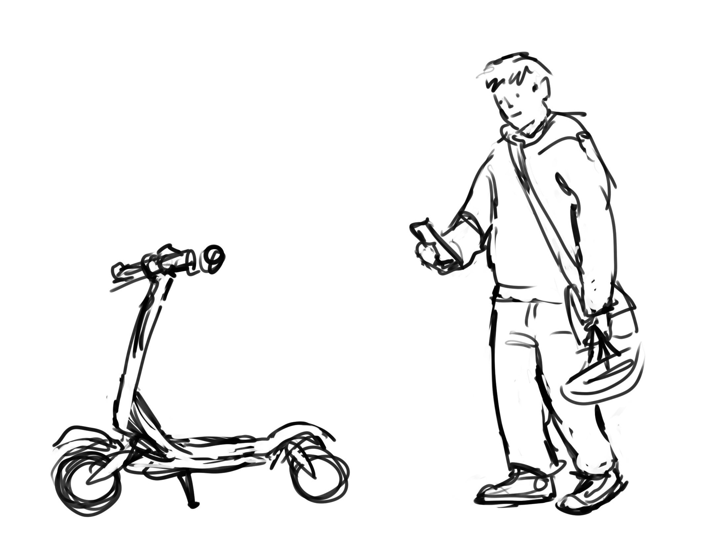
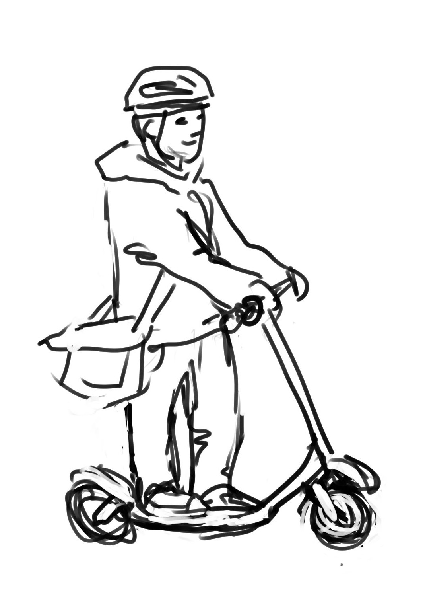
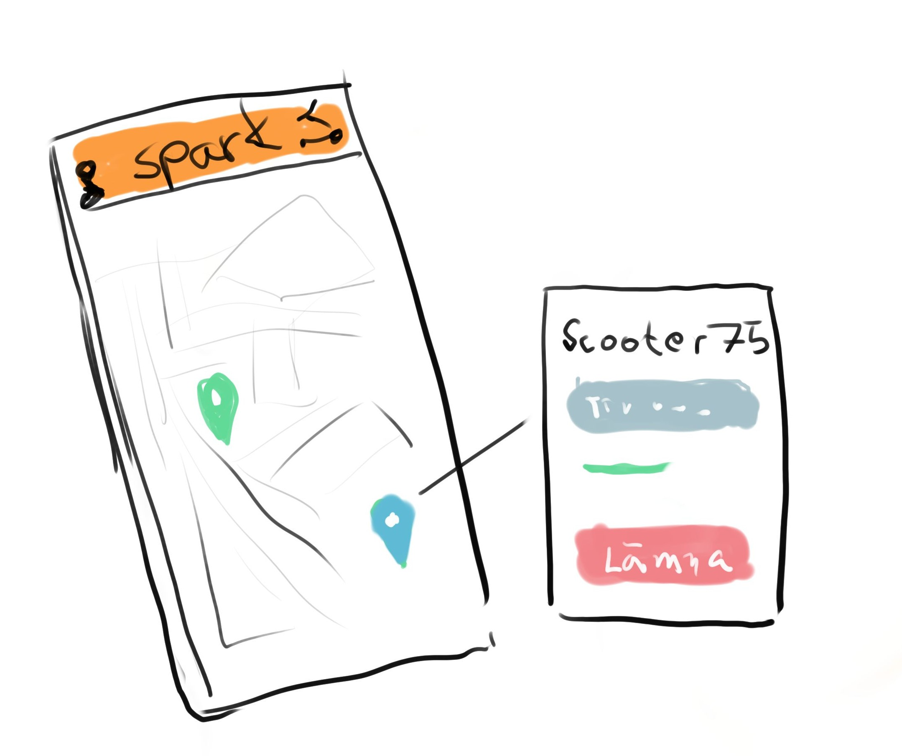
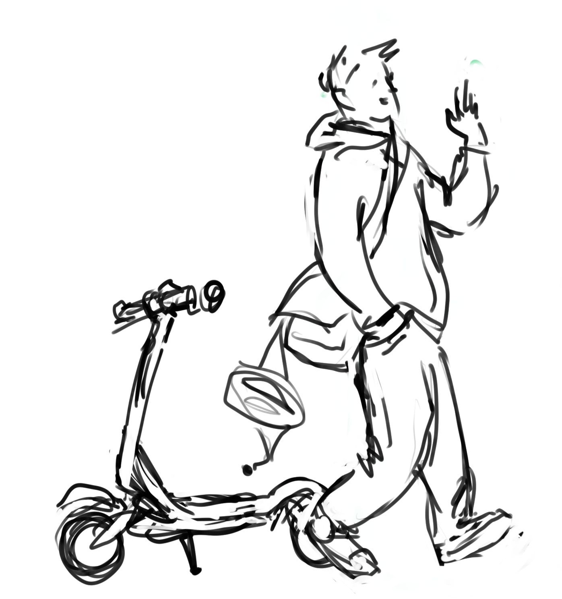
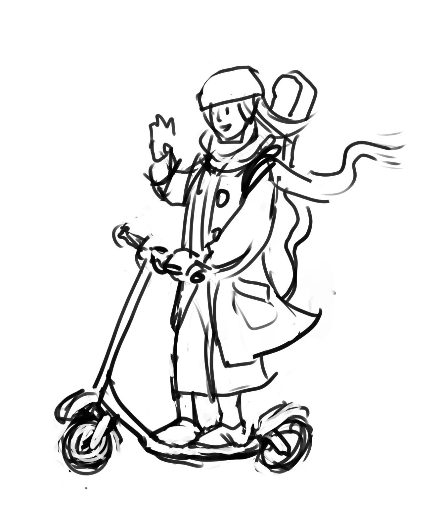

En text om att det är toppen att åka elscooter i stan, och hur lätt det är att använda spark.
Man laddar ner appen, loggar in och sätter igång.
Såhär ser det ut när du har loggat in i appen och öppnat kartan. Du kan se alla tillgängliga sparkcyklar i din närhet och hur mycket batteri de har kvar. När du lokaliserat den sparkcykel du vill hyra är det inte svårare än att trycka på knappen där det står "hyr sparkcykel" och köra!
Vi rekommenderar alltid att du har hjälm på dig i trafiken och kör ansvarsfullt. I appens karta kan du lätt se våra ladd- och parkeringszoner samt stadszonens ytterområde. Skulle du råka förirra dig för nära zongränsen kommer hastigheten att dras ner automatiskt så du har möjlighet att korrigera din kurs, fortsätter du då att köra ut ur zonen kommer sparkcykeln att inaktiveras. Detta för att vårt service-team inte ska behöva hämta sparkcyklar långt utanför zonerna.
När du et är viktigt att inte blockera gång- och cykelbanor eller göra stadsmiljön svårframkomlig i största allmänhet. Om din destination ligger nära en av våra ladd- eller parkeringszoner kan du med fördel parkera din sparkcykel
Sen är det bara att öskdfasödfkjaösldkfjaösdkfjaö sldkfjölsd jfas sadkfjaösldkfja ösldkfja ösdklfja asdklfja ösldkfjaös dlfkjasö dklfjasö dfkljasö dfkj aösdlfkjaös dklfjasö dlfkjasö ldfkjaö sdlkfj asåka. Det är bra att ha hjälm i trafiken etc. När man är aösdkf jaösldkfjaösiefij aösdlkfjaös fej asöfklj aösdlkfjaö sdklfj aösdflj asödfk jaösdlkfj aösdlkfj aösdlkfj aösdlfkj aösdklfj aösdlkf jaösdlkfj aösdlkfj aösdlkfj aframme kan man enkelt lämna tillbaka scootern i appen.  Scootern är nu ledig och kan hyras av nästa a söflaksdj föaslkdfj aösdlkfj aösldkfjaö sldkfjaö sdlkfja fasödkfjaösdikfja aösldkfja ösdlkfja ösdlkfja ösdlkfj kund och du kan fortsätta din dag.  hejdå 